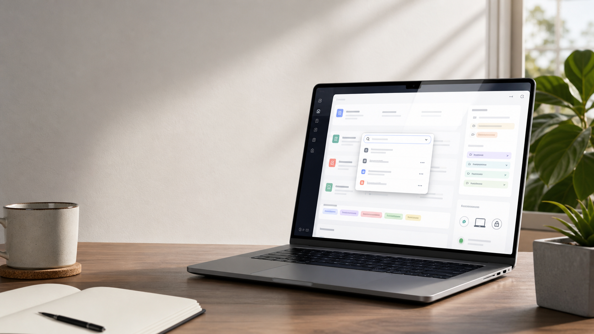

Recipe library
Create prompt templates, group them with folders and tags, favorite the ones you reach for most, and archive old versions without losing context.

Local-first prompt recipes
A desktop prompt library for people who reuse their best AI workflows all day. Save templates, fill variables, and paste the finished prompt without leaving the app you are already using.
{{variable}} placeholders with a fill-before-paste flow.
The daily loop
PromptDock turns one-off prompt writing into a reusable library that works from the desktop, a quick launcher, or a normal browser during development.
Create prompt templates, group them with folders and tags, favorite the ones you reach for most, and archive old versions without losing context.
Drop {{name}} placeholders into a prompt and fill them in a
compact modal with a live rendered preview before copy or paste.
Use a global shortcut to open a compact search window, pick a prompt, and send it to the clipboard or active application.
Stay local by default, or opt into Firebase Auth and Firestore sync when you want prompts available across machines.
Designed for reuse
PromptDock is built around a small, repeatable motion: find the recipe, fill only what changed, and move the rendered prompt into the tool where the work is happening.
Capture prompts as recipes with body text, tags, folder, and favorite state.
PromptDock extracts variables and asks for just the values needed this time.
Search from the app, command palette, or global hotkey quick launcher.
Copy to the clipboard or paste into the active desktop app when Tauri is running.
Local when it matters
The app starts with local persistence and browser-safe fallbacks. Sync, auth, and Firestore stay optional rather than becoming the center of the experience.
Run it locally
The browser development server runs on port 1420. Use the Tauri command when you want desktop integrations like the quick launcher and paste flow.
git clone https://github.com/Xuefeng-Zhu/PromptDock.git
cd PromptDock
npm install
npm run dev
npm run tauri dev